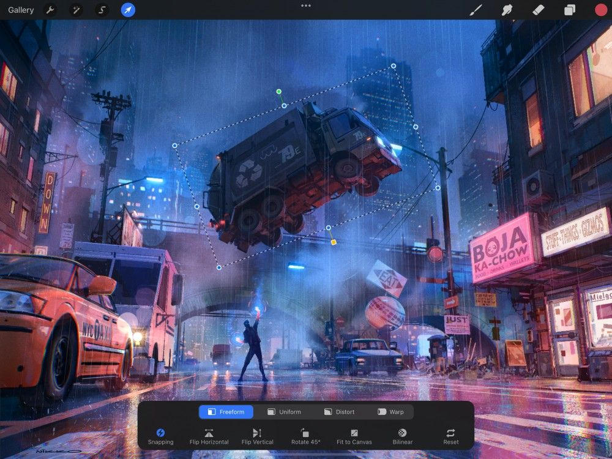
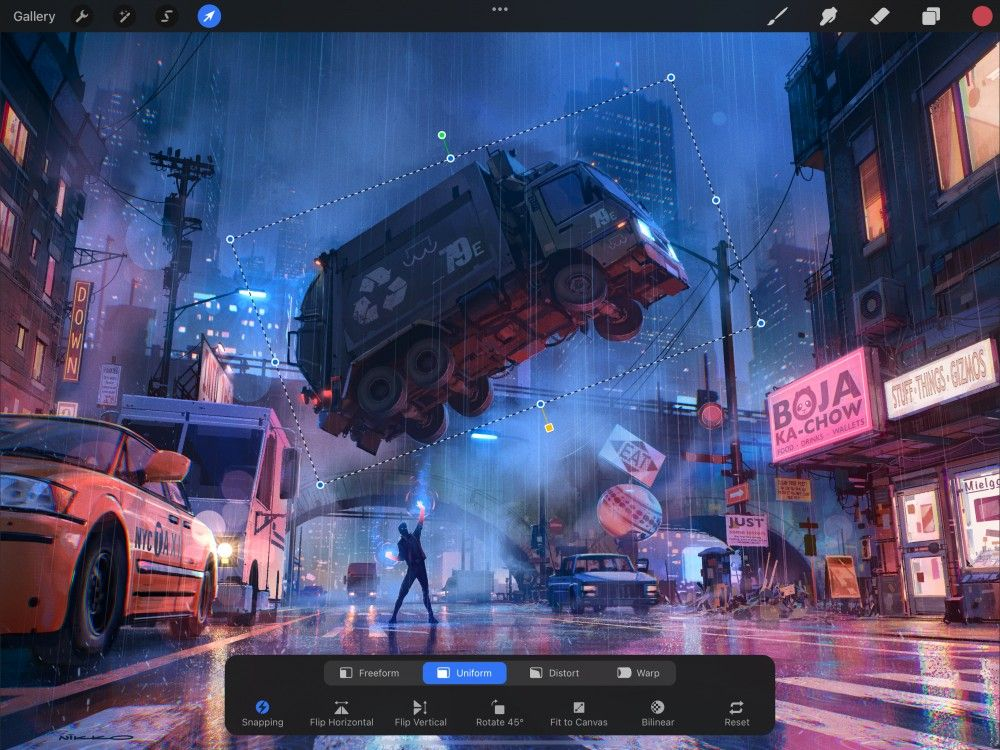

📖 Đã dịch sang tiếng Việt. Thuật ngữ chuyên môn giữ tiếng Anh — rê chuột để xem nghĩa (tooltip).
Interface and Gestures
Học những điều cơ bản về Transform (biến đổi) trong 2D: xoay, lật, vừa khít màn hình và điều chỉnh từ tính. Dùng lối tắt cảm ứng để đẩy nhẹ, thu phóng và di chuyển, cùng tinh chỉnh Interpolation (nội suy) ảnh để có kết quả thu phóng sắc nét.
Heads Up
When 3D Painting, the interface and gestures for Transform are different from those used when painting in 2D. To find out more about interface and gestures when 3D Painting check out Transform in the 3D section of this Handbook.
Giao diện
Thao tác kích thước, hình dáng và vị trí của một đối tượng bằng các điều khiển cảm ứng đơn giản.
Transform Button (nút biến đổi)
Trên thanh menu phía trên cùng, bạn sẽ thấy biểu tượng mũi tên. Đó chính là Transform button (nút biến đổi).
Khi chạm Transform button (nút biến đổi), nó sẽ tự động chọn nội dung của lớp hiện tại và mở Transform toolbar (thanh công cụ biến đổi).
Bounding Box (hộp bao)
Kích hoạt Transform (biến đổi) sẽ tự động chọn nội dung của lớp hiện tại.
Vùng chọn này hiện dạng một bounding box (hộp bao) viền bởi các đường nét đứt di chuyển. Bounding box có chiều rộng và chiều cao đúng bằng nội dung bên trong.
Kéo ở bất kỳ đâu bên trong hoặc ngoài bounding box (hộp bao) để di chuyển nội dung.
Chụm-thu phóng bên trong hộp để phóng to hoặc thu nhỏ nội dung.
Transformation Nodes (các nút biến đổi)
Transformation nodes (các nút biến đổi) là các tay cầm màu xanh nhỏ. Dùng chúng để biến đổi kích thước và hình dáng của nội dung ảnh.
Bạn sẽ thấy Transformation nodes (các nút biến đổi) ở các điểm giữa và các góc của bounding box (hộp bao).
Kéo một nút điểm giữa để kéo giãn và ép vùng chọn dọc theo một trục. Hoặc, để kết quả nhanh hơn, kéo một nút góc để đổi cỡ nội dung dọc theo cả hai trục cùng lúc.
Bounding Box Adjust Node (nút chỉnh hộp bao)
Nút màu vàng đơn lẻ bên dưới vùng chọn của bạn là Bounding Box Adjust node (nút chỉnh hộp bao).
Kéo nút Bounding Box Adjust (chỉnh hộp bao) màu vàng để xoay bounding box (hộp bao) quanh nội dung đã chọn. Bounding Box xoay quanh điểm giữa của chính nó và tự động điều chỉnh để vừa khít nhất với vùng chọn. Một thông số sẽ hiện ra, cho thấy góc xoay và thay đổi theo thời gian thực khi bạn điều chỉnh.
Bounding Box Adjust node (nút chỉnh hộp bao) cho phép bạn biến đổi nội dung đã chọn từ bất kỳ góc nào. Điều chỉnh bounding box (hộp bao) để vừa khít nhất với nội dung đã chọn. Sau đó dùng các nút Rotation (xoay) hoặc Transformation (biến đổi) để thao tác.
Scale Read-out (thông số tỷ lệ)
Thông số cho tỷ lệ biến đổi hiện tại.
Khi kéo một Transformation Node (nút biến đổi) để đổi tỷ lệ một đối tượng, Scale Read-out (thông số tỷ lệ) sẽ tự động hiện ra. Nó sẽ hiển thị chính xác theo pixel Chiều rộng và Chiều cao của phép biến đổi.
Snapping (bám dính)
Snapping (bám dính) giúp căn chỉnh nội dung khi bạn đang biến đổi nó.
Để kích hoạt, chạm nút Snapping (bám dính) và bật Snapping. Để tắt, chạm công tắc Snapping tắt.
Khi bạn di chuyển hoặc biến đổi nội dung với Snapping (bám dính) bật, các đường dẫn màu xanh dương và vàng sẽ hiện trên màn hình. Các đường xanh dương giúp bạn căn hàng và bám lớp của mình vào nội dung khác, còn các đường vàng giúp bám các phép biến đổi lớp dựa trên các trục khung vẽ và điểm trung tâm.
Snapping (bám dính) còn chứa Magnetics (từ tính), giúp bạn khóa phép biến đổi nội dung vào một trục bạn chọn.
Tìm hiểu thêm về snapping (bám dính) .
Rotation Node (nút xoay)
Nút màu xanh lá đơn lẻ phía trên vùng chọn của bạn là Rotation node (nút xoay).
Kéo Rotation node (nút xoay) để vặn và xoay nội dung. Nó sẽ xoay quanh điểm giữa của chính nó. Một thông số sẽ hiện ra, cho thấy góc xoay và thay đổi theo thời gian thực khi bạn điều chỉnh.
Transformation Methods (các phương pháp biến đổi)
Các nút trên Transform toolbar (thanh công cụ biến đổi) ở cuối màn hình cung cấp bốn cách khác nhau để đổi kích thước và hình dáng nội dung trong bounding box (hộp bao).
Khi mới kích hoạt Transform (biến đổi), mặc định là Freeform (tự do). Đây là một trong bốn phương pháp thao tác nội dung. Khám phá cả bốn tùy chọn sâu hơn trong các phần Handbook tiếp theo.
- Freeform (tự do) cho phép bạn kéo giãn và ép vùng chọn theo bất kỳ hướng nào. Freeform làm việc này mà không giữ tỷ lệ gốc. Ví dụ, dùng Freeform, bạn có thể kéo giãn nội dung cao hơn nhiều so với ban đầu, mà không đổi chiều rộng.
- Uniform (đồng đều) giữ nguyên tỷ lệ ảnh gốc. Nếu bạn kéo nội dung cao hơn, nó sẽ tự động rộng hơn cùng lúc để giữ tỷ lệ gốc của đối tượng.
- Distort (co dạng) giúp dễ dàng tạo vẻ phối cảnh trong ảnh. Kéo một nút góc để làm phần ảnh đó lớn hơn hoặc nhỏ hơn. Hoặc nghiêng nội dung bằng cách kéo một nút trung tâm.
- Warp (bẻ cong) mang đến hiệu ứng phức tạp nhất. Nó áp một lưới lên vùng chọn. Việc này cho phép bạn di chuyển các nút ở ngoài hoặc trong lưới, để tạo hiệu ứng ba chiều. Với warp, bạn thậm chí có thể gấp một phần ảnh chồng lên chính nó.
Chạm bất kỳ nút nào ở trên để chuyển sang phương pháp biến đổi đó.
Dùng các nút hữu ích này làm lối tắt cho những phép biến đổi phổ biến nhất.
Lật nội dung theo chiều ngang hoặc dọc nhanh chóng. Chạm Flip Horizontal (lật ngang) hoặc Flip Vertical (lật dọc) trên Transform toolbar (thanh công cụ biến đổi).
Hoặc, để xoay nội dung theo các bước cố định 45° theo chiều kim đồng hồ, chạm Rotate 45° (xoay 45°).
Fit to Screen (vừa khít màn hình)
Thu phóng ngay đối tượng Transform (biến đổi) để lấp đầy khung vẽ.
Procreate cung cấp hai cách để làm việc này. Cả hai đều giữ tỷ lệ khung hình của ảnh, nên nó sẽ không bị kéo giãn hay ép.
Khi Magnetics (từ tính) bật, Fit to Screen (vừa khít màn hình) sẽ biến đổi nội dung để vừa khung vẽ với độ phủ tối đa. Nếu nội dung dài hơn ở một hướng so với hướng kia, điều này có thể khiến một phần tràn ra khỏi ranh giới khung vẽ. Khi đã xác nhận, phần tràn sẽ bị cắt đi.
Không có Magnetics (từ tính), Fit to Screen (vừa khít màn hình) sẽ làm nội dung lớn nhất có thể trên khung vẽ mà không cắt phần nào. Điều này có thể có nghĩa là sẽ còn một khoảng trống ngang hoặc dọc quanh mép ảnh.
Interpolation (nội suy)
Kiểm soát cách Procreate điều chỉnh các pixel trong ảnh khi biến đổi để có kết quả tốt nhất.
Interpolation (nội suy) là phương pháp dùng để điều chỉnh pixel trong ảnh đã thu phóng, xoay, hoặc biến đổi. Interpolation là biểu tượng tròn thứ hai từ bên phải của Transform bar (thanh biến đổi). Mặc định, Interpolation được đặt thành Nearest (gần nhất).
Khi bạn chạm Nearest (gần nhất), bạn được đưa ra ba lựa chọn, mỗi lựa chọn có ưu điểm riêng. Chọn cái phù hợp nhất với mục đích của bạn.
- Nearest Neighbor (láng giềng gần nhất) dùng thông tin từ pixel gần nhất với điểm nội suy. Việc này tạo kết quả sắc và chính xác, nhưng cũng có thể để lại ảnh với các cạnh khía răng cưa.
- Bilinear interpolation (nội suy song tuyến) xem xét vùng pixel 2x2 quanh điểm nội suy. Việc này cho ảnh mượt hơn so với kết quả Nearest Neighbor (láng giềng gần nhất) cứng hơn nhưng chính xác hơn.
- Bicubic interpolation (nội suy song lập phương) xem xét vùng 4x4 pixel bao quanh. Việc này mang lại kết quả mượt nhất trong tất cả. Nhưng, vùng mẫu càng lớn, ảnh có vẻ càng mềm.
Pro Tip
The label of this icon changes to reflect your current Nearest, Bilinear, or Bicubic Interpolation mode. But, the icon graphic will always look the same.
Tìm hiểu thêm về Interpolation (nội suy) .
Nút Reset (đặt lại) có thể hoàn tác mọi thay đổi bạn đã thực hiện khi ở Transform mode (chế độ biến đổi), nhưng đó không phải là tùy chọn duy nhất.
Chạm nút Reset (đặt lại) để bỏ qua mọi thay đổi bạn đã thực hiện khi ở Transform mode (chế độ biến đổi). Nội dung của bạn sẽ trở về trạng thái gốc.
Nếu bạn chỉ muốn hoàn tác điều chỉnh cuối cùng, chạm khung vẽ bằng hai ngón để thực hiện Undo (hoàn tác) tiêu chuẩn. Để Redo (làm lại), chạm bằng ba ngón.
Pro Tip
Once you leave Transform mode, Procreate compresses all your Transform actions into one step. This will make all the combined steps into a single undo. You can change this behavior in Settings by toggling ‘Simplified Undos’ off. Procreate will then remember every step you take in Transform mode. This allows you to undo each stage one by one even after you’ve committed the whole Transformation.
Numeric input (nhập số)
Transform (biến đổi) và Rotate (xoay) với độ chính xác bằng cách dùng nhập số
Thực hiện Freeform Transform (biến đổi tự do), Uniform Transform (biến đổi đồng đều) hoặc Rotate (xoay) chính xác bằng bàn phím số. Dùng bàn phím iOS để nhập chiều rộng, chiều cao và góc độ chính xác theo toán học.
Freeform (tự do) và Uniform Transform (biến đổi đồng đều) bằng nhập số
Để thực hiện Freeform (tự do) hoặc Uniform Transform (biến đổi đồng đều) hoàn hảo theo pixel. Chạm bất kỳ nút góc hoặc cạnh màu xanh nào của bounding box (hộp bao) quanh đối tượng bạn muốn biến đổi. Việc này sẽ gọi bàn phím số cho phép bạn nhập chiều cao và chiều rộng pixel chính xác của phép biến đổi.
Để thực hiện Uniform Transform (biến đổi đồng đều), giữ biểu tượng Link (liên kết) giữa các giá trị X & Y ở trạng thái nối. Nhập chiều rộng hoặc chiều cao pixel mà bạn muốn biến đổi đối tượng.
Để thực hiện Freeform Transform (biến đổi tự do), chạm biểu tượng Link (liên kết) giữa các giá trị X & Y để hủy nối. Nhập chiều cao và chiều rộng pixel mà bạn muốn biến đổi đối tượng.
Lưu ý: Vì bạn đang biến đổi theo pixel nên bạn phải nhập số nguyên chứ không phải số thập phân.
Xoay một đối tượng bằng nhập số
Để thực hiện xoay chính xác một đối tượng. Chạm Rotation Node (nút xoay) màu xanh lá ở trên cùng của bounding box (hộp bao) quanh đối tượng bạn muốn xoay. Việc này sẽ gọi bàn phím số cho phép bạn nhập góc chính xác mà bạn muốn xoay đối tượng.
Để xoay đối tượng sang trái, nhập số độ bạn muốn xoay biểu diễn dưới dạng số dương. Để xoay đối tượng sang phải, nhập số độ bạn muốn xoay biểu diễn dưới dạng số âm.
Pro Tip
Because you are rotating by degrees you can enter decimals.
Cử chỉ
Các cử chỉ tự nhiên này khiến việc Transform (biến đổi) nội dung trở nên nhanh chóng và trực quan.


Move
Kéo ở bất kỳ đâu bên trong hoặc ngoài bounding box (hộp bao) để di chuyển nội dung.


Scale
Chụm ở bất kỳ đâu bên trong bounding box (hộp bao) để phóng to hoặc thu nhỏ nội dung. Việc này sẽ giữ tỷ lệ đồng đều. Chụm ở bất kỳ đâu ngoài bounding box sẽ điều chỉnh tỷ lệ và xoay khung vẽ.
Pro Tip
Hold the Transform button to invert the above. Holding Transform and pinching anywhere within the bounding box adjusts the scale or rotation of your canvas. And holding Transform and pinching anywhere outside the bounding box will adjust the scale of your content up or down.
Nudge
Chạm ở bất kỳ đâu ngoài bounding box (hộp bao) để đẩy nhẹ vùng chọn theo hướng đó theo từng bước. Bạn có thể làm việc này trong các chế độ Freeform (tự do), Uniform (đồng đều), và Distort (co dạng). Càng thu phóng gần, bước di chuyển càng nhỏ.

Commit
Khi xong, chạm Transform button (nút biến đổi) để xác nhận thay đổi và thoát Transform mode (chế độ biến đổi).
Still have questions?
If you didn't find what you're looking for, explore our video resources on YouTube or contact us directly. We’re always happy to help.